Congressional Black Caucus Week
A week of live systems.

Overview
A multi-venue production week combining custom visual content, LED systems, high-profile performances, rapid changeovers, and continuous on-site troubleshooting.
Multiple events, prestigious venues, sponsor assets, performers, and changing schedules required a visual system that could be rebuilt and reconfigured without losing consistency or show readiness.
I designed and deployed event-specific visual content, configured Novastar-controlled LED displays, supported load-in and show operation, and kept playback and display systems stable across a full week of programming.
Each room received a distinct visual identity while the underlying production approach stayed disciplined, repeatable, and resilient under live-event pressure.
The picture begins behind the wall
LED construction, processing, cabling, content checks, and room preparation establish the conditions for everything the audience eventually sees.


The week, frame by frame
The curated record across the week's rooms — stages, screens, and the systems behind them. Click any frame to view it full size.
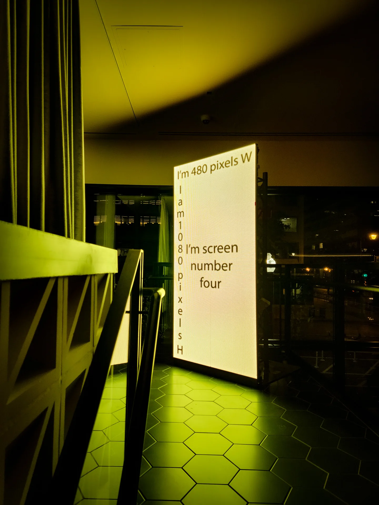
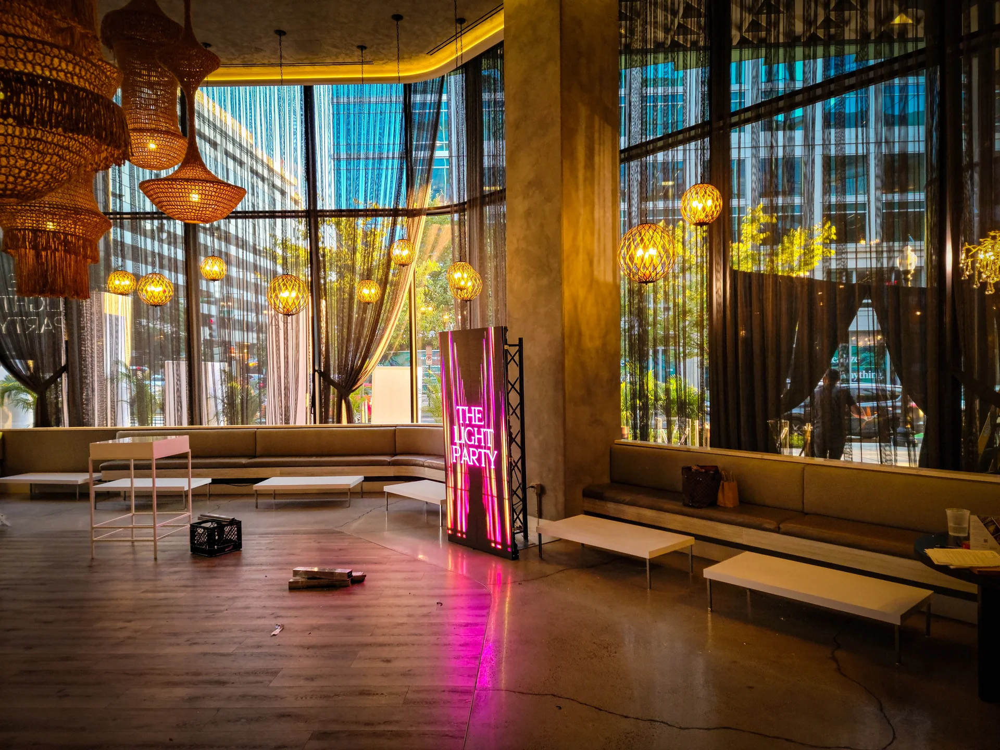
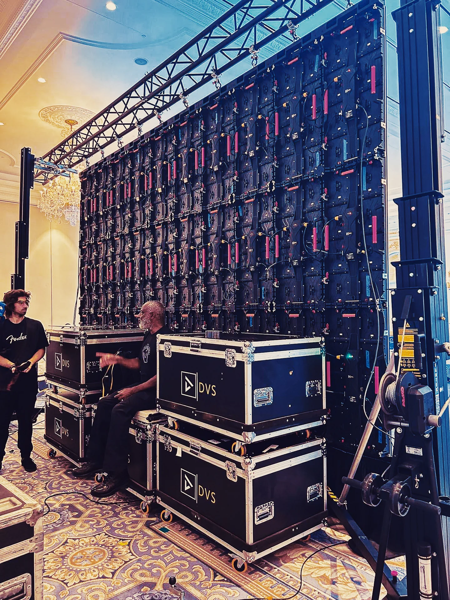
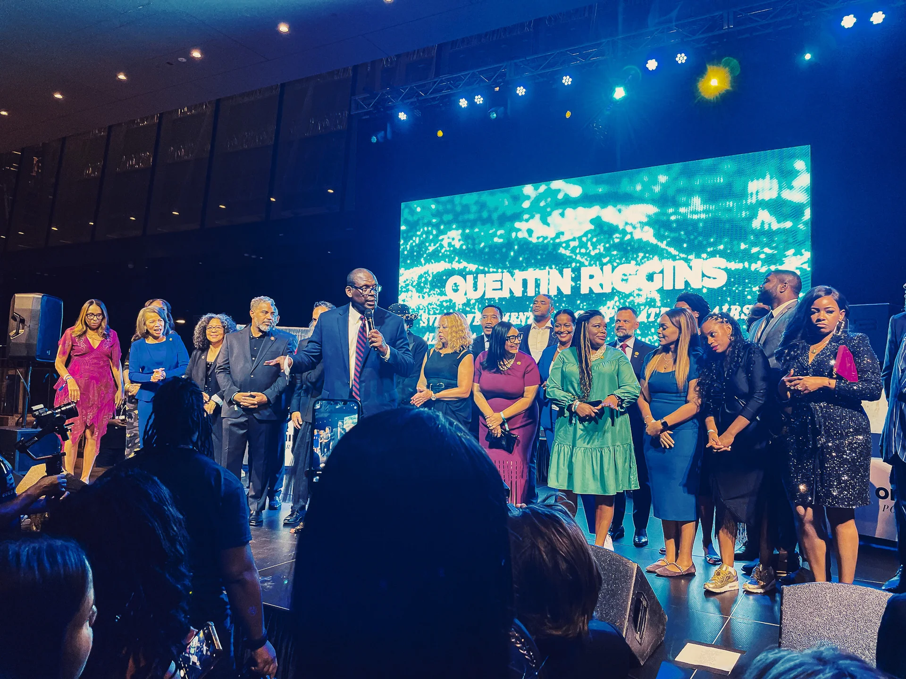
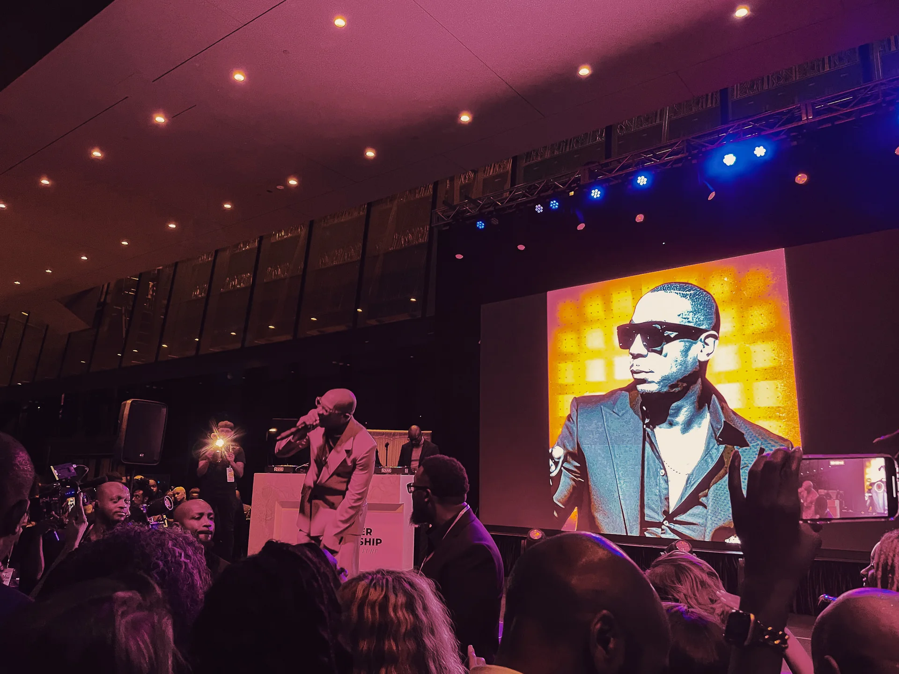
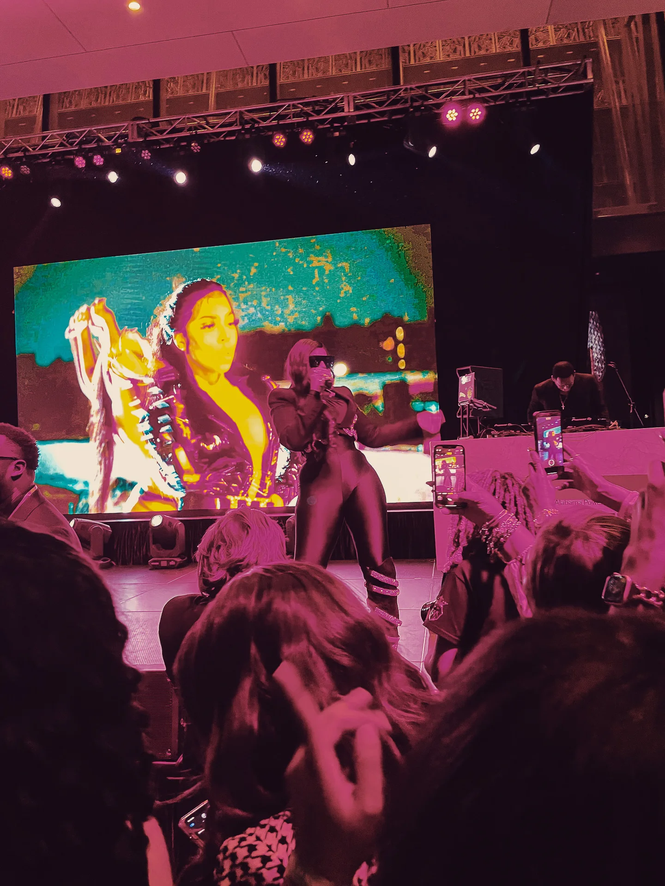
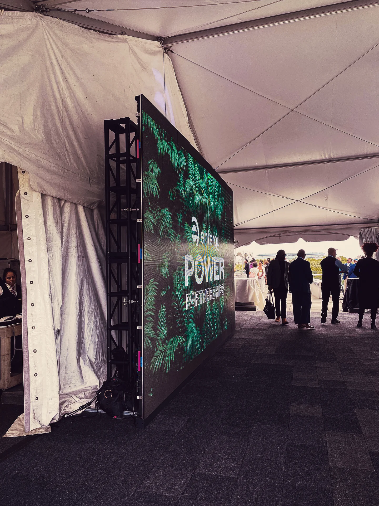
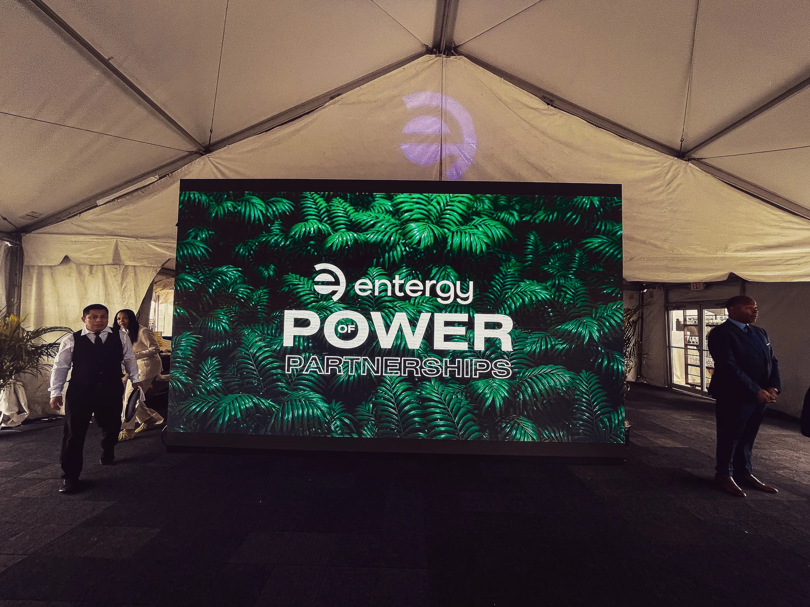
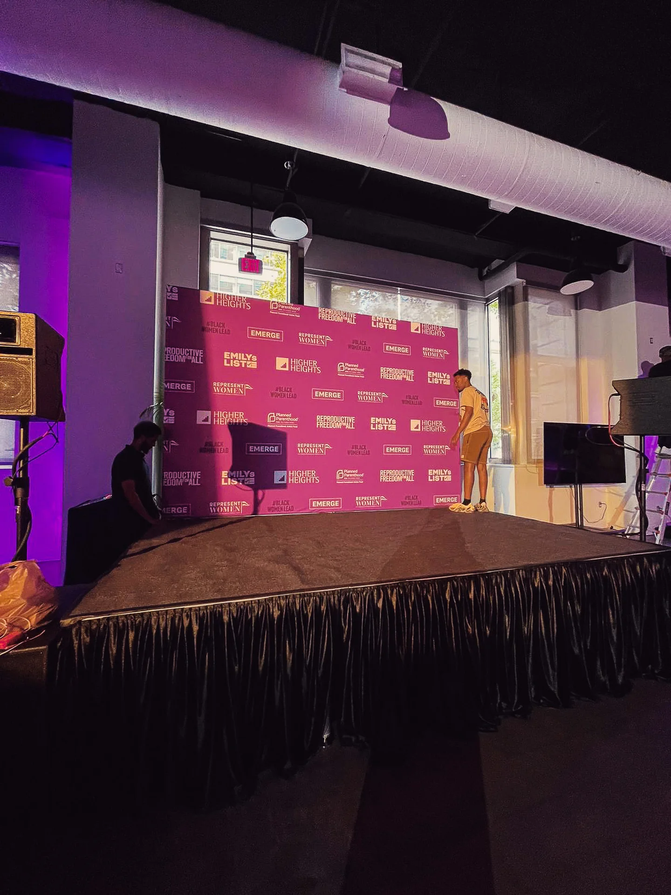
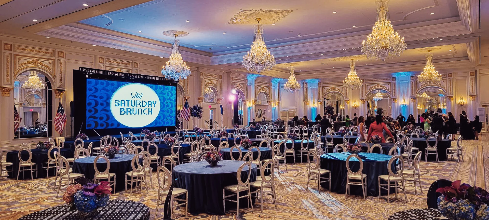
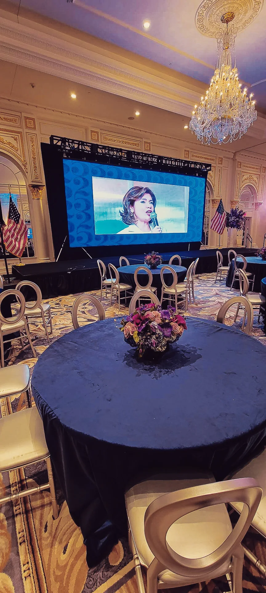
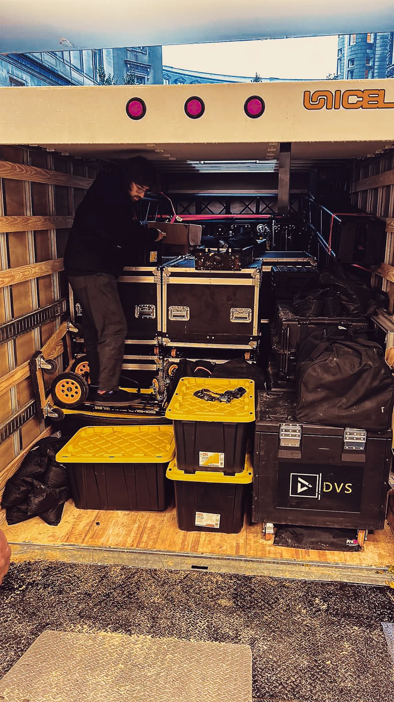
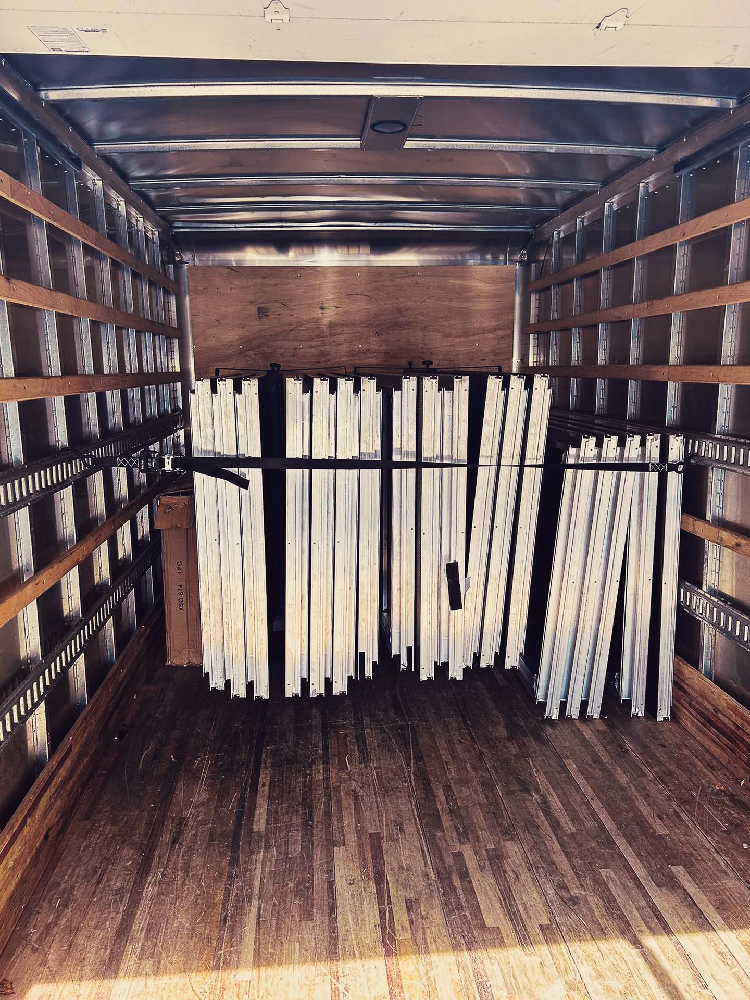